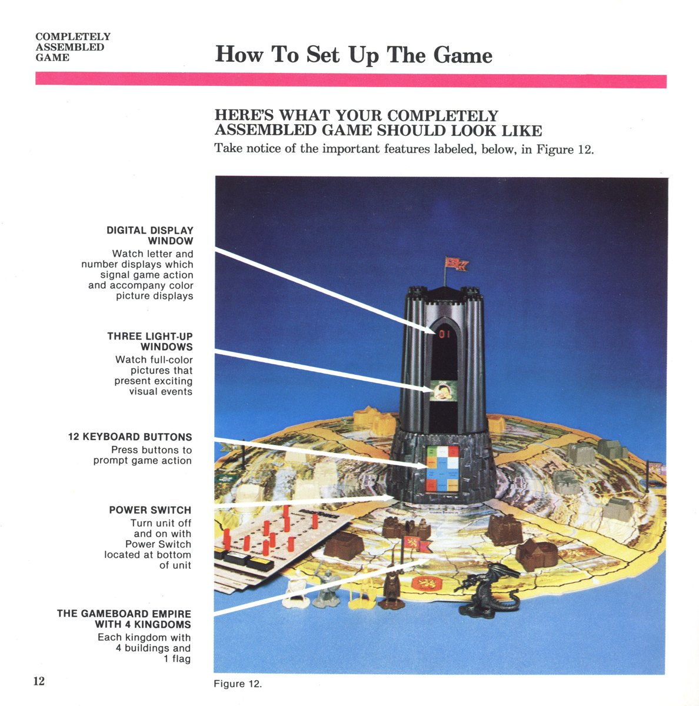

1981
Milton Bradley Company
Milton Bradley Dark Tower
A motorized rotating black tower that keeps a hidden state behind a tinted cover and reveals it by spinning film cels into view

Overview
Deep dive
Team & pioneers
- Vince Erato. Credited designer; previously created the Big Trak toy; inspired by the computer game Wilderness Campaign (1979).
- Bob Pepper. Illustrated the game, including the film cels inside the tower.
- Michael Gray. M-B designer who contributed to the Dark Tower manual.